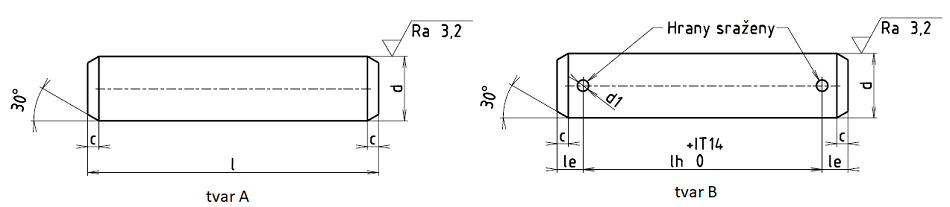

Příklad označení ocelového čepu tvaru B, jmenovitý průměr d = 20 mm, délka l = 100 mm:
ČEP ISO 2340 • B • 20×100 • St
Příklad označení ocelového čepu tvaru B s dírou pro závlačku d1 = 6,3 mm, jmenovitý průměr d = 20 mm, délka l = 100 mm, vzdálenost středu díry pro závlačku od hlavy lh = 80 mm:
ČEP ISO 2340 • B • 20×100×6,3×80 • St
POZNÁMKY
Mezní úchylky délky čepu l:
| Délka čepu l [mm] | Mezní úchylky | |
|---|---|---|
| přes | do | Δl [mm] |
| 10 | ±0,25 | |
| 10 | 50 | ±0,50 |
| 50 | ±0,75 | |
Čepy jsou standardizovány v délkách: 6, 8, 10, 12, 14, 16, 18, 20, 22, 24, 26, 28, 30, 32, 35, 40, 45, 50, 55, 60, 65, 70, 75, 80, 85, 90, 95, 100, 120, 140, 160, 180 a 200 mm. Nad 200 mm jsou délky odstupňovány po 20 mm;
Jiné mezní úchylky průměru čepu než h11, například a11, c11, f8 nutno dohodnout s výrobcem;
Průměr díry pro závlačku d1 je shodný s jmenovitým průměrem závlačky (viz ISO 1234);
Materiál čepů s hlavou: Automatová ocel St, tvrdost 125 až 245 HV. Jiné materiály podle dohody;
Povrchová úprava čepů: Čepy jsou běžně dodávány bez povrchové úpravy opatřené ochranným prostředkem proti korozi. Přednostní úpravy po dohodě jsou brynýrování, fosfátování, zinkování, chromátování (viz ISO 2081 a ISO 4520);
Povrch: Čepy s hlavou musí mít stejnoměrnou kvalitu povrchu, bez nepravidelností a nepřípustných vad. Čepy s hlavou musí být odjehleny.
| dh11 | cmax. | le | d1H13 | l | Hmotnost [g/mm] |
|---|---|---|---|---|---|
| 3 | 1 | 1,6 | 0,8 | 6 až 30 | 0,056 |
| 4 | 1 | 2,2 | 1 | 8 až 40 | 0,099 |
| 5 | 2 | 2,9 | 1,2 | 10 až 50 | 0,15 |
| 6 | 2 | 3,2 | 1,6 | 12 až 60 | 0,22 |
| 8 | 2 | 3,5 | 2 | 16 až 80 | 0,4 |
| 10 | 2 | 4,5 | 3,2 | 20 až 100 | 0,6 |
| 12 | 3 | 5,5 | 3,2 | 24 až 120 | 0,89 |
| 14 | 3 | 6 | 4 | 28 až 140 | 1,2 |
| 16 | 3 | 6 | 4 | 32 až 160 | 1,57 |
| 18 | 3 | 7 | 5 | 35 až 180 | 2 |
| 20 | 4 | 8 | 5 | 40 až 200 | 2,5 |
| 22 | 4 | 8 | 5 | přes 45 | 2,98 |
| 24 | 4 | 9 | 6,3 | přes 50 | 3,55 |
| 27 | 4 | 9 | 6,3 | přes 50 | 4,5 |
| 30 | 4 | 10 | 8 | přes 60 | 5,55 |
| 33 | 4 | 10 | 8 | přes 65 | 6,7 |
| 36 | 4 | 10 | 8 | přes 70 | 8 |
| 40 | 4 | 10 | 8 | přes 80 | 9,86 |
| 45 | 4 | 12 | 10 | přes 90 | 12,5 |
| 50 | 4 | 12 | 10 | přes 100 | 15,4 |
| 55 | 6 | 14 | 10 | přes 120 | 18,64 |
| 60 | 6 | 14 | 10 | přes 120 | 22,2 |
| 70 | 6 | 16 | 13 | přes 140 | 30,2 |
| 80 | 6 | 16 | 13 | přes 160 | 39,4 |
| 90 | 6 | 16 | 13 | přes 180 | 49,9 |
| 100 | 6 | 16 | 13 | přes 200 | 61,6 |